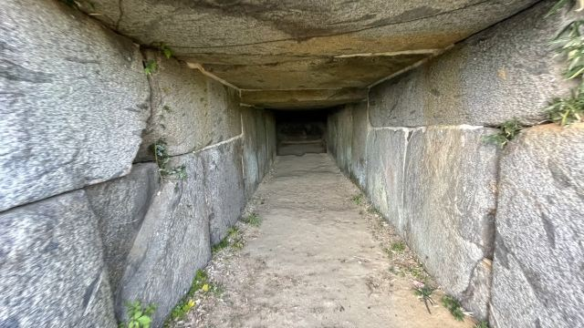
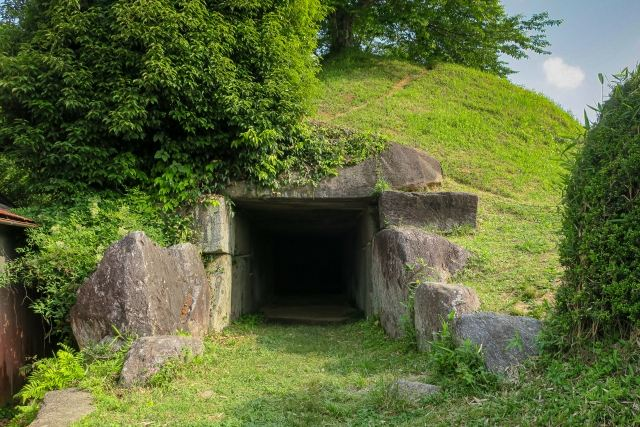
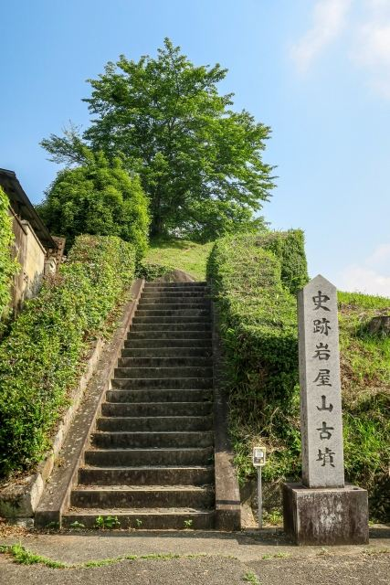

精巧な切石造りの石室
巨大な石材を丁寧に加工して組み上げた石室は、飛鳥時代の高い石工技術を感じられる見どころです。

岩屋山古墳は、明日香村西部にある終末期古墳です。 巨大な切石を使った精巧な石室が特徴で、飛鳥時代の高度な石室技術を今に伝える貴重な古墳です。 石室の美しい加工や保存状態の良さから、明日香を代表する古墳の一つとして知られています。
| 営業時間 | 見学自由 |
|---|---|
| 定休日 | なし |
| 料金 | 無料 |
| 所要時間 | 約15〜20分 |
| 駐車場 | 要確認 |
| アクセス |
近鉄飛鳥駅から徒歩約5分。 駅から近く、周辺の古墳や史跡と合わせて散策できます。 |
| 地図 | 地図はこちら |

巨大な石材を丁寧に加工して組み上げた石室は、飛鳥時代の高い石工技術を感じられる見どころです。

飛鳥駅から徒歩で訪れることができ、周辺の古墳や史跡巡りにも組み込みやすい古墳です。
岩屋山古墳は、7世紀頃に築造されたと考えられている終末期古墳です。 被葬者については諸説ありますが、精巧な切石造りの横穴式石室を持つことから、当時の有力者の墓と考えられています。 石室の構造や加工技術は、飛鳥時代の墓制を知るうえで重要な史跡となっています。